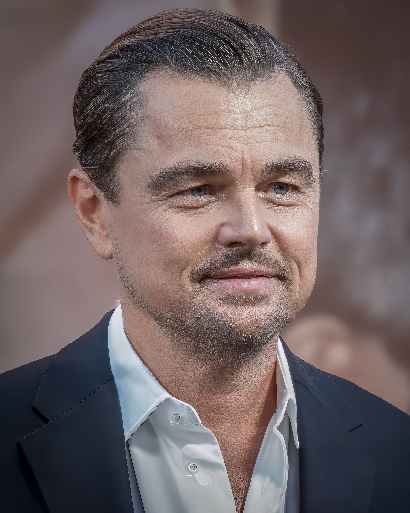

Leonardo DiCaprio

Leonardo Wilhelm DiCaprio és un actor, productor i activista mediambiental nord-americà. Reconegut per la seva versatilitat, ha guanyat diversos premis, incloent un Òscar pel seu paper a The Revenant.
Pel·lícules destacades
- Titanic (1997)
- Inception (2010)
- The Revenant (2015)
- Shutter Island (2010)
- El llop de Wall Street (2013)
Opinió personal: És un actor molt versàtil i capaç de transmetre emocions reals en cada paper. El considero un dels millors de la seva generació